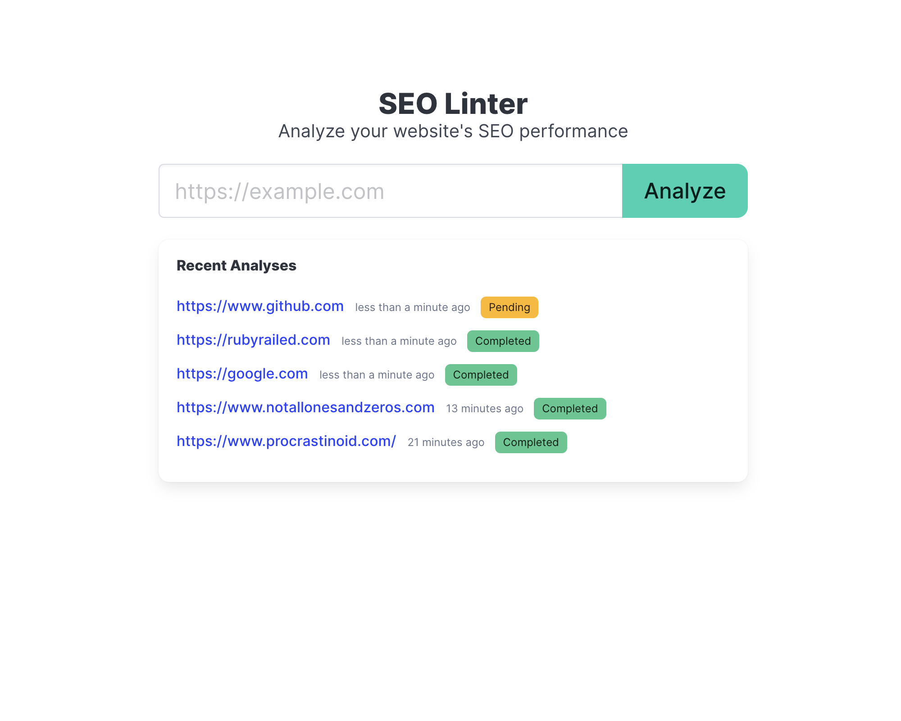
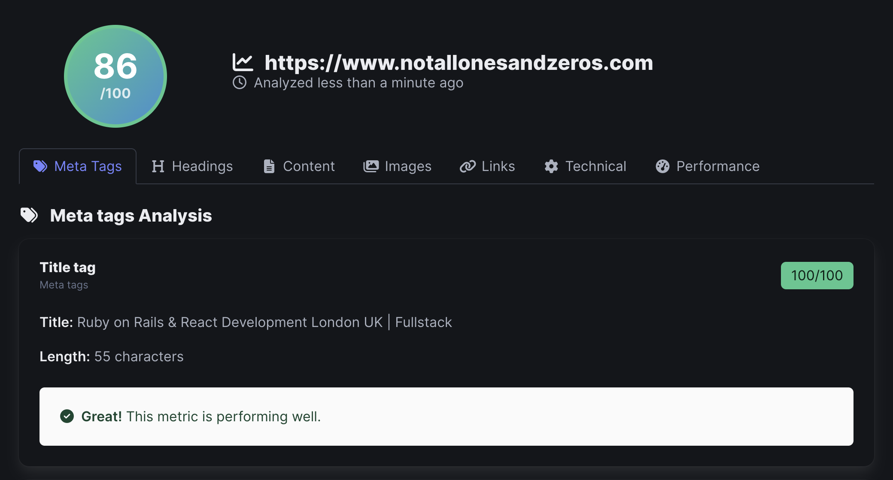

About This Project
A simple SEO analysis tool I built to avoid paying for expensive SEO services or hitting request limits on free tools. Enter a URL and get basic SEO metrics like meta tags, headings, images, and links analysis. Try it at seo.notallonesandzeros.com.
I wanted something straightforward that would give me quick insights without the bloat of commercial tools. It checks the fundamentals - title tags, meta descriptions, heading structure, alt text on images, and basic technical SEO elements.
Built with Rails 8 using Solid Queue for background processing and Turbo broadcasts to update the frontend in real-time as the analysis runs. Nothing fancy, just a useful tool that does what I need it to do.
How to use.
1. Enter a URL including the https://

2. View youre results.
